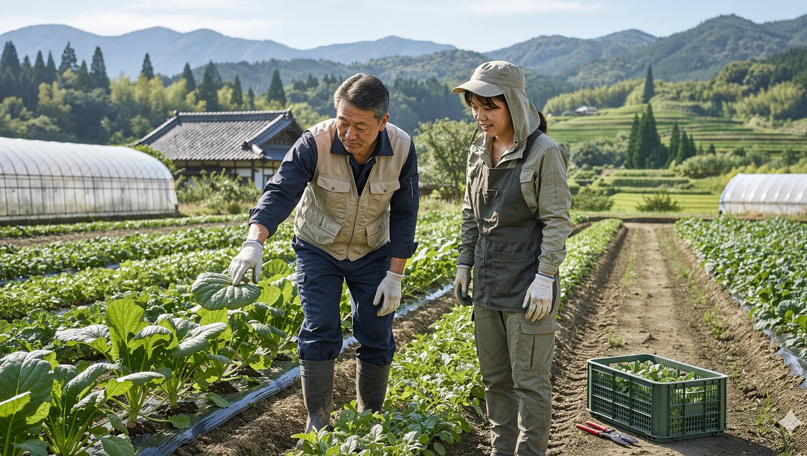

担当する作業
栽培・飼育など、具体的な業務と必要な経験。
農業法人の採用担当者様へ

育てるもの、季節ごとの作業、一日の始まり方。さらに住まいや通勤まで。農業で働く姿を具体的に伝え、候補者の経験と希望を聞きませんか。仕事内容と生活の条件を一緒に確認していく採用相談です。
登録・人材情報・動画の確認・オンライン面接まで無料。
条件に合う候補者がいる場合にご案内します。
動画で確認日本語の受け答えを知る
面接まで無料見て、話してから判断
LINEで相談まず希望条件を伝える
SELECTくんで、検討の一歩を
栽培する作物や飼育する動物によって、担当する作業は異なります。繁忙期の働き方だけでなく、通常期の業務、休み、住まいからの移動も説明したい内容です。人材情報で経験を確認し、動画と面接で受け答えや本人の希望を確かめてください。対象業務・在留資格の条件、候補者の状況は個別に確認します。
利用場面のイメージ
採用前に、確かめたいこと
栽培・飼育など、具体的な業務と必要な経験。
忙しい時期や勤務の変化、年間の仕事の見通し。
住まい、移動、買い物など、伝えられる地域の情報。
こんなときの採用相談に
相談から検討まで
通常期と繁忙期の作業、担当する範囲を明確にします。
勤務地・勤務時間に加え、住まいと通勤の前提をお知らせください。
該当者との面接で、仕事と暮らしの両方を説明します。
情報・動画・オンライン面接を通じて、企業様ご自身で採用をご判断いただけます。
料金について
採用の検討を始める段階で、
候補者を知るための費用はかかりません。
1人あたり・税別内定後、詳しい人材情報をご提供する際に発生する料金です。
VISA申請・登録支援などの費用は、上記20万円に含まれません。必要な手続きや費用は採用条件に応じて個別にご確認ください。
ご相談の前に
作物や飼育する動物、担当作業とともに希望する経験をお伝えください。条件に合う候補者がいる場合に情報をご案内します。
住まいを含む受け入れ条件は個別に確認が必要です。現時点で用意できる条件と未定の項目を分けて、担当者にお知らせください。
雇用期間や業務内容、在留資格などの条件の確認が必要です。季節性と年間の作業内容をお伝えいただき、個別にご確認ください。
外国人採用をご検討の企業様へ
職種・仕事内容、勤務地、必要人数・希望時期をお知らせください。条件に合う候補者がいる場合、人材情報と動画をご案内します。
登録・人材情報・動画の確認・オンライン面接まで無料。
条件に合う候補者がいる場合にご案内します。
友だち追加後、採用の希望条件をご回答ください。
LINE登録だけでお申し込みにはなりません。
人材のご案内や採用・入社時期を保証するものではありません。